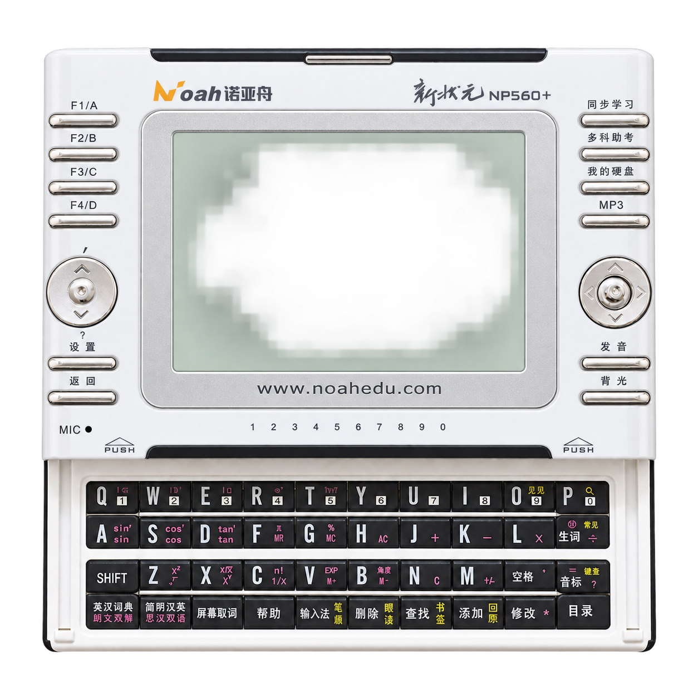

NOAH NP560+ / QEMU
声音未启用
连接中
240 × 120 + 段码 · ST7529 硬件 LCDCMD F00001 · DATA F00003

设置
LCD
等待 LCD…
按键
默认关闭，保持原始按键时序。开启可减少轻点漏键，但快速换向可能短暂重叠；切换时会释放当前按键。机身图片上的按键不受此选项影响。
原始矩阵 M00–M63（高级）
仅供按键排查；编号不是原机键名，操作可能切换或退出当前程序。
日志
诊断 JSON 包含最近的按键、画面和本地运行路径；分享前请检查内容。
NAND 保存未启用
SoC ROM：等待连接…
设备：等待连接…
等待 QEMU…
NAND 文件
进入前会要求确认，并关停 QEMU，导出包含当前写入日志的完整 NAND。这里是离线 FAT16 文件桥；不等于原厂 USB 传输。首版支持浏览、下载和新增导入，不覆盖、不删除。
尚未进入文件管理。
导入时会制作独立检查点并校验；完成并开机后写入新的设备配置，原基础镜像与日志保留供恢复。文件管理仅限本机浏览器。
关于 NP560+ 模拟器
模拟器作者：HelloClyde
Thanks：步步高电子词典游戏群（830340878）